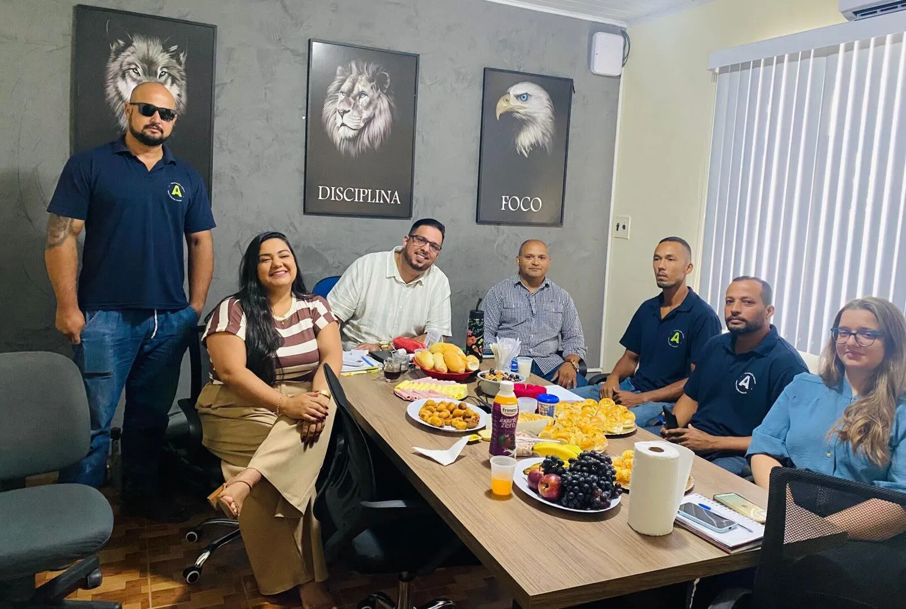
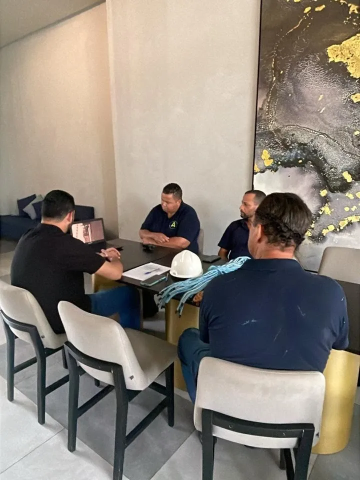
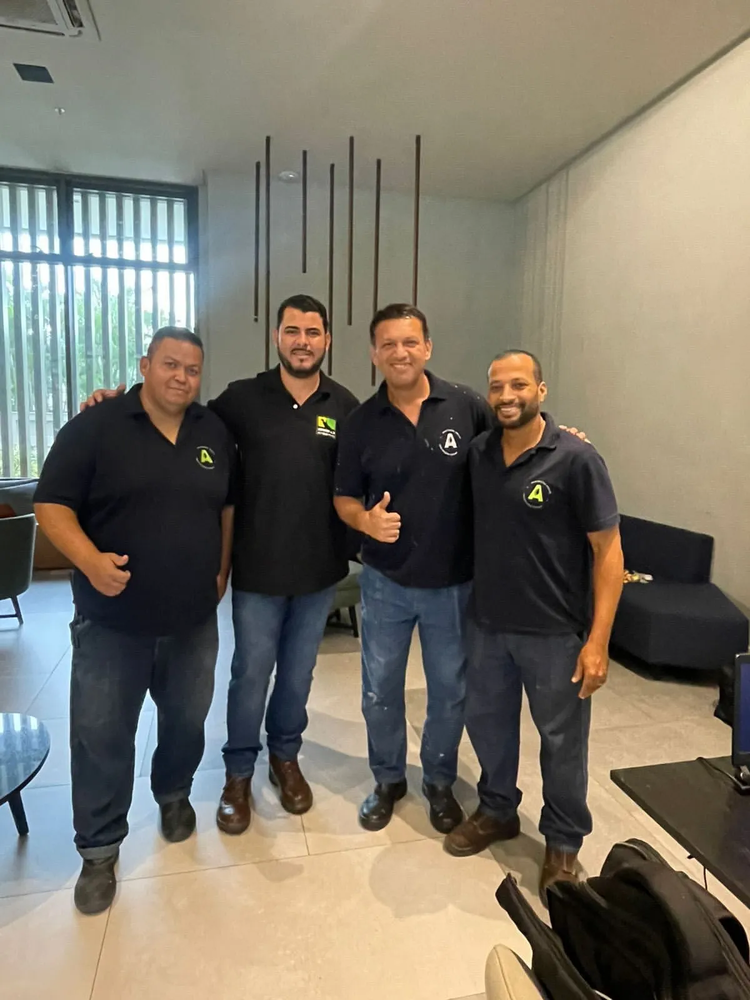
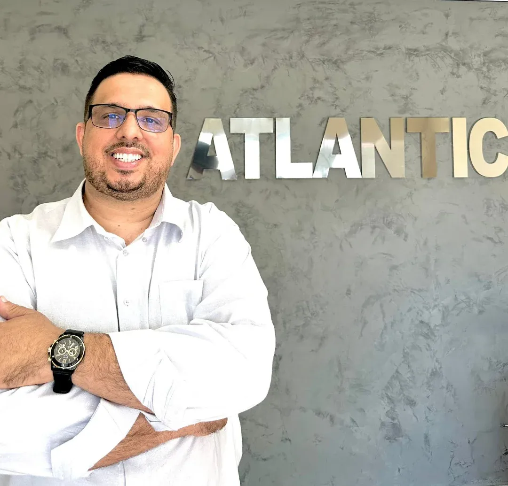

01 — ÂNCORA
Limpeza de reservatórios de água potável
Higienização semestral de cisternas e caixas d'água com laudo técnico, produtos registrados e equipe treinada para espaço confinado.
// DESDE 2020 //
Manutenção predial, meio ambiente e construção civil para condomínios, shoppings, galpões, indústrias e escolas em todo o Rio de Janeiro — com licenciamento INEA, IBAMA e Corpo de Bombeiros Civil.
// O CUSTO DE ADIAR //
Reservatório sem limpeza semestral, caixa de gordura transbordando, infiltração ignorada por dois invernos. O síndico descobre o problema quando o laudo já está vencido e o orçamento triplicou.
Agendar vistoria técnica gratuita →Risco sanitário
Água potável sem limpeza e laudo em dia expõe moradores e coloca o condomínio em falta com a vigilância sanitária.
Multa ambiental
Descarte irregular de efluentes e resíduos gera autuação do INEA e do IBAMA — com responsabilização direta do gestor.
Prestadores soltos
Cinco fornecedores diferentes, nenhum responsável técnico. Quando algo falha, ninguém assume o laudo.
A solução Atlântic
Um único contrato cobrindo prevenção sanitária, meio ambiente e obra civil — com engenheiro elétrico e civil próprios assinando cada entrega.
0
Anos de atuação
0
Serviços em contrato único
0
Nota no Google
0
Fotos no perfil Google
// O QUE FAZEMOS //
Cinco serviços-âncora e uma lista estendida de complementares. Passe o mouse em cada card para ver o escopo.
01 — ÂNCORA
Higienização semestral de cisternas e caixas d'água com laudo técnico, produtos registrados e equipe treinada para espaço confinado.
02 — ÂNCORA
Plano de rondas, elétrica, hidráulica e atendimento 24h para condomínios, shoppings, galpões, indústrias e escolas.
03 — ÂNCORA
Desinsetização, desratização e descupinização com produtos registrados e certificado de execução.
04 — ÂNCORA
Caixa de gordura, sabão, reuso e retardo — coleta, transporte e destinação com rastreio documental.
05 — ÂNCORA
Obra estrutural, tratamento de infiltração e laje com projeto e acompanhamento de engenheiro civil.
Fachada, área comum e demarcação de garagem.
Troca de telhas, calhas e correção de caimento.
Divisórias, forros e acabamento em ambientes corporativos.
Adequação de áreas comuns, salões e portarias.




// FUNDAÇÃO 05/2020 //
Fundador da Atlântic Soluções Ambientais, na sede da empresa em Magé — RJ.
// QUEM SOMOS //
Desde maio de 2020 atendemos condomínios, shoppings, galpões, indústrias e escolas em toda a Grande Rio de Janeiro. Trabalhamos com equipe própria — incluindo engenheiro elétrico e engenheiro civil — para que cada serviço tenha responsável técnico e documentação de entrega.
Nossa proposta é cobrir o ciclo inteiro da manutenção predial: da prevenção sanitária à reforma estrutural, sem terceirizar a responsabilidade nem empurrar o problema para o próximo fornecedor.
LICENCIAMENTO E CONFORMIDADE
Engenheiro elétrico e engenheiro civil acompanham escopo, execução e laudo.
Emergência de água, esgoto ou elétrica atendida fora do horário comercial.
Diagnóstico presencial sem custo antes de qualquer proposta comercial.
Condomínios, shoppings, indústrias, galpões e instituições de ensino.
// O QUE DIZEM //
“A Atlantic Soluções é uma empresa séria e comprometida, com excelente atuação em Engenharia Civil e Ambiental. Possui equipe técnica qualificada, atendimento ágil e serviços executados com total responsabilidade e conformidade com as normas. Recomendo!”
“A Atlantic é uma empresa idônea, com processos bem estruturados e devidamente definidos. Destaca-se pela qualidade técnica de suas entregas, bem como pela agilidade no feedback e nas respostas às demandas apresentadas. Diante da experiência positiva, recomendamos seus serviços.”
“Empresa que atende diversas demandas com qualidade e tem funcionários qualificados, além de simpáticos.”
“Empresa técnica, transparente, com processos e procedimentos bem definidos. Eu recomendo.”
“Atendimento imediato e com excelência.”
// DÚVIDAS FREQUENTES //
Não achou sua dúvida? Fale direto com a equipe no WhatsApp (21) 99523-0044.
Sim. Agendamos uma visita técnica sem custo para diagnosticar o problema, medir o escopo e só então enviar a proposta. Não há compromisso de contratação.
Sim. Limpeza de reservatórios, controle de pragas e serviços ambientais são entregues com documentação técnica assinada, no padrão exigido pela vigilância sanitária e pelos órgãos ambientais.
Sede em Vila Carvalho, Magé — RJ, com atendimento em todo o estado do Rio de Janeiro. Para contratos recorrentes, avaliamos deslocamento fora da Região Metropolitana.
A recomendação padrão para edificações é a cada seis meses. Trabalhamos com contrato semestral e lembrete de agendamento para que o condomínio nunca fique com laudo vencido.
Sim, temos assistência 24 horas para clientes com contrato de manutenção. O escritório funciona de segunda a sexta, das 08h às 17h.
Sim — é o nosso formato preferido. Reservatório, pragas, caixa de gordura e manutenção predial num único contrato reduzem custo e concentram a responsabilidade técnica em um só fornecedor.
// ONDE ESTAMOS //
Endereço
R. Olivio de Matos, 444 — Vila Carvalho
Magé — RJ, 25935-730
Telefone / WhatsApp
Horário
Seg. a Sex. · 08:00 às 17:00
Sáb. e Dom. · fechado
// VISTORIA GRATUITA //
Responda em um minuto e sua mensagem chega pronta no WhatsApp da equipe técnica. Sem robô, sem call center.